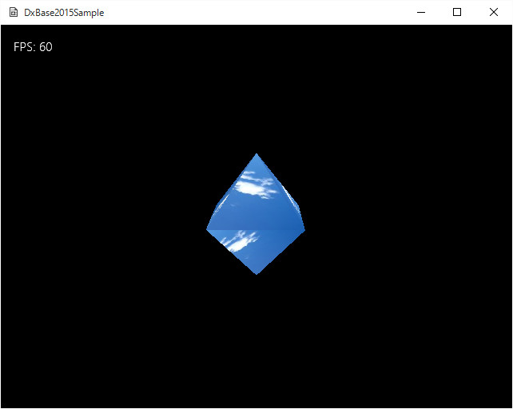

シンプルDxBase2015
Simple09．入力とステージ推移
入力デバイス
DxBase2015Simple/Simple09のソリューションを起動すると以下のような画面が現れます。

図Simple09a
ここで、コントローラのAもしくはBボタンを押す、あるいはキーボードのFかGを押下する、あるいはマウスの左クリックか右クリックをすると、オブジェクトが右か左方向に回転します。
この機能を実装するためには、まず、WinMain.cppのMainLoop()関数に、以下のように記述します。
int MainLoop(HINSTANCE hInstance, HWND hWnd, bool isFullScreen, int iClientWidth, int iClientHeight){
//中略
try{
//中略
//メッセージループ
MSG msg = { 0 };
while (WM_QUIT != msg.message){
if (PeekMessage(&msg, nullptr, 0, 0, PM_REMOVE)){
//メッセージがあればウインドウメッセージを得る
TranslateMessage(&msg);
DispatchMessage(&msg);
}
//入力デバイスのリセット
//コントローラ
App::GetApp()->GetInputDevice().ResetControlerState();
vector<DWORD> UseKeyVec = {
'F', 'G', VK_LBUTTON, VK_RBUTTON
};
//キーボードとマウス
App::GetApp()->GetInputDevice().ResetInputState(
App::GetApp()->GetHWnd(), UseKeyVec
);
//更新描画処理
App::GetApp()->UpdateApp();
if (App::GetApp()->DrawApp()){
//フロイントバッファに転送
App::GetApp()->Present(1, 0);
}
}
//msg.wParamには終了コードが入っている
RetCode = (int)msg.wParam;
}
//中略
}
キーボードは、使用するキーを指定してリセットします。
そうしておいて、たとえばゲームオブジェクトのUpddate()関数に以下のように記述します。
void GameObject::Update(){
//ゲームステージが無効ならリターン
if (m_GameStgae.expired()){
return;
}
//コントローラの取得
auto CntrolStateVec = App::GetApp()->GetInputDevice().GetControlerVec();
auto KeyState = App::GetApp()->GetInputDevice().GetKeyState();
int CntlState = 0;
if (CntrolStateVec[0].bConnected){
if (CntrolStateVec[0].wPressedButtons & XINPUT_GAMEPAD_X){
//Xボタンが押された瞬間なら
//ゲームステージの作成
auto Stage2 = Object::CreateObject<GameStage2>();
//次のゲームステージとして設定
//SetNextStage()関数は次のUpdateApp()で有効になる。
App::GetApp()->SetNextStage(Stage2);
//ステージを変更した場合は必ずそこでUpdate終了
return;
}
//Aボタンが押された状態なら
else if (CntrolStateVec[0].wButtons & XINPUT_GAMEPAD_A){
CntlState = -1;
}
else if (CntrolStateVec[0].wButtons & XINPUT_GAMEPAD_B){
CntlState = 1;
}
}
float ElapsedTime = App::GetApp()->GetElapsedTime();
if (KeyState.m_bPushKeyTbl['F'] || KeyState.m_bPushKeyTbl[VK_LBUTTON] || CntlState < 0){
m_RotVelocity += 0.05f;
if (m_RotVelocity > 10.0f){
m_RotVelocity = 10.0f;
}
}
else if (KeyState.m_bPushKeyTbl['G'] || KeyState.m_bPushKeyTbl[VK_RBUTTON] || CntlState > 0){
m_RotVelocity -= 0.05f;
if (m_RotVelocity < -10.0f){
m_RotVelocity = -10.0f;
}
}
Quaternion SpanQt;
SpanQt.RotationRollPitchYawFromVector(Vector3(0, ElapsedTime * m_RotVelocity, 0));
m_Quaternion *= SpanQt;
m_WorldMatrix.DefTransformation(m_Scale, m_Quaternion, m_Position);
}
ステージの推移
このサンプルには、ステージの推移が実装されています。図Simple09aの状態で、コントローラのXボタンを押すと以下のようなステージになります。

図Simple09b
上記のソースUpddate()関数の以下の部分でステージを変更しています。
//中略
//コントローラの取得
auto CntrolStateVec = App::GetApp()->GetInputDevice().GetControlerVec();
auto KeyState = App::GetApp()->GetInputDevice().GetKeyState();
int CntlState = 0;
if (CntrolStateVec[0].bConnected){
if (CntrolStateVec[0].wPressedButtons & XINPUT_GAMEPAD_X){
//Xボタンが押された瞬間なら
//ゲームステージの作成
auto Stage2 = Object::CreateObject<GameStage2>();
//次のゲームステージとして設定
//SetNextStage()関数は次のUpdateApp()で有効になる。
App::GetApp()->SetNextStage(Stage2);
//ステージを変更した場合は必ずそこでUpdate終了
return;
}
//中略
}
//中略
}